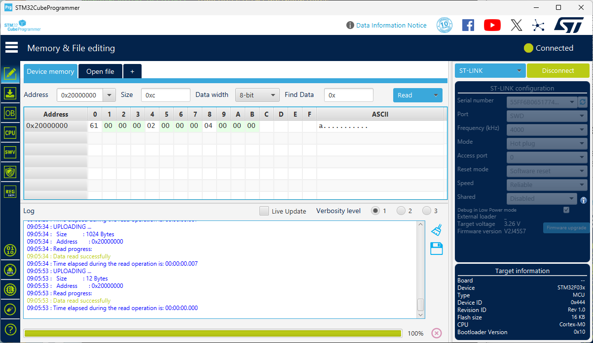

│ Section │ Description │ ├─────────┼──────────────────────────────────────────────┤ │ data │ static initialized, initial values in flash │ │ bss │ static unassigned, cleared │ │ heap │ dynamically allocated, user managed │ │ stack │ automatically allocated, stack frame managed │My bootstrap since the first boot.c already initializes the stack. I need now to copy the initial values from flash to the data section and clear the bss section.
You can check your understanding of the C memory model by looking at the C test code below and figuring where the linker will allocate the variables.
/** Test code: main.c *********************************************************/
const char hexa[] = "0123456789abcdef" ;
long first = 1 ;
long i ;
int main( void) {
static char c = 'a' ;
char *cp = &c ;
*cp += i ;
i += hexa[ 13] - c + first++ ;
return 0 ;
}
first and c, for a
total of 8 bytes as sections are word aligned.
i for a total of 4 bytes.
hexa with all the const data
located after the code. As it is a zero terminated string, it occupies 17 bytes
and is padded with 3 zero for word alignment.
first and
c for a total of 8 bytes located after the const data.
cp, it is dynamically managed by
the code generated by the C compiler.
main(), hexa and c
are unchanged, first has the value 2, i has the
value 4 and cp has been deallocated.
I add the symbols defined by the linker script:
__etext, start of initial value copy in FLASH.
__data_start, start of initialized data in RAM.
__bss_start, start of unitialized data in RAM, it is the same
location as __data_end.
__bss_end, first location after the bss section.
Reset_handler() to:
main() C function.
main() has been executed.
/* Memory locations defined by linker script */
extern long __StackTop ; /* &__StackTop points after end of stack */
void Reset_Handler( void) ; /* Entry point for execution */
extern const long __etext[] ; /* start of initialized data copy in flash */
extern long __data_start__[] ;
extern long __bss_start__[] ;
extern long __bss_end__ ; /* &__bss_end__ points after end of bss */
/* Interrupt vector table:
* 1 Stack Pointer reset value
* 15 System Exceptions
* NN Device specific Interrupts
*/
typedef void (*isr_p)( void) ;
isr_p const isr_vector[ 2] __attribute__((section(".isr_vector"))) = {
(isr_p) &__StackTop,
/* System Exceptions */
Reset_Handler
} ;
extern int main( void) ;
void Reset_Handler( void) {
const long *f ; /* from, source constant data from FLASH */
long *t ; /* to, destination in RAM */
/* Assume:
** __bss_start__ == __data_end__
** All sections are 4 bytes aligned
*/
f = __etext ;
for( t = __data_start__ ; t < __bss_start__ ; t += 1)
*t = *f++ ;
while( t < &__bss_end__)
*t++ = 0 ;
main() ;
for( ;;) ;
}
/** Test code: main.c *********************************************************/
const char hexa[] = "0123456789abcdef" ;
long first = 1 ;
long i ;
int main( void) {
static char c = 'a' ;
char *cp = &c ;
*cp += i ;
i += hexa[ 13] - c + first++ ;
return 0 ;
}
$ make cstartup.bin
cstartup.elf
text data bss dec hex filename
121 8 4 133 85 cstartup.elf
cstartup.bin
rm cstartup.o cstartup.elf
If I look further in the cstartup.map generated by the linker.
.text 0x08000000 0x79
*(.isr_vector)
.isr_vector 0x08000000 0x8 cstartup.o
0x08000000 isr_vector
*(.text*)
.text 0x08000008 0x34 cstartup.o
0x08000008 Reset_Handler
.text.startup 0x0800003c 0x2c cstartup.o
0x0800003c main
*(.rodata*)
.rodata 0x08000068 0x11 cstartup.o
0x08000068 hexa
.data 0x20000000 0x8 load address 0x0800007c
0x20000000 __data_start__ = .
*(.data*)
.data 0x20000000 0x8 cstartup.o
0x20000004 first
0x20000008 . = ALIGN (0x4)
0x20000008 __data_end__ = .
.bss 0x20000008 0x4 load address 0x08000084
0x20000008 . = ALIGN (0x4)
0x20000008 __bss_start__ = .
*(.bss*)
.bss 0x20000008 0x0 cstartup.o
*(COMMON)
COMMON 0x20000008 0x4 cstartup.o
0x20000008 i
0x2000000c . = ALIGN (0x4)
0x2000000c __bss_end__ = .
*(.stack*)
0x20001000 __StackTop = (ORIGIN (RAM) + LENGTH (RAM))
hexa is located in .rodata at 0x08000068
first is located in .data at 0x20000004
i is located in .bss at 0x20000008
c is not listed as it doesn’t have global scope, but I can
guess it’s located at 0x20000000.
c is at offset 0x7c, which also means that c has
been located at 0x20000000.
$ hexdump -C cstartup.bin 00000000 00 10 00 20 09 00 00 08 10 b5 08 4a 08 4b 09 49 |... .......J.K.I| 00000010 8b 42 06 d3 00 21 08 4a 93 42 05 d3 00 f0 0e f8 |.B...!.J.B......| 00000020 fe e7 01 ca 01 c3 f3 e7 02 c3 f5 e7 7c 00 00 08 |............|...| 00000030 00 00 00 20 08 00 00 20 0c 00 00 20 30 b5 08 49 |... ... ... 0..I| 00000040 08 48 0a 78 04 68 4b 68 12 19 d2 b2 5d 1c 9b 1a |.H.x.hKh....]...| 00000050 64 33 1b 19 4d 60 03 60 0a 70 00 20 30 bd c0 46 |d3..M`.`.p. 0..F| 00000060 00 00 00 20 08 00 00 20 30 31 32 33 34 35 36 37 |... ... 01234567| 00000070 38 39 61 62 63 64 65 66 00 00 00 00 61 00 00 00 |89abcdef....a...| 00000080 01 00 00 00 |....| 00000084
main() has been
executed.

Next, I will merge the C startup initialization with the ledtick code.